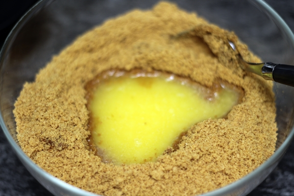
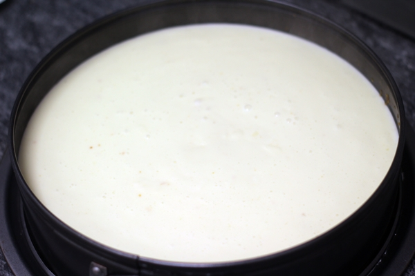
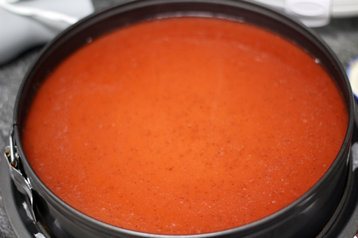
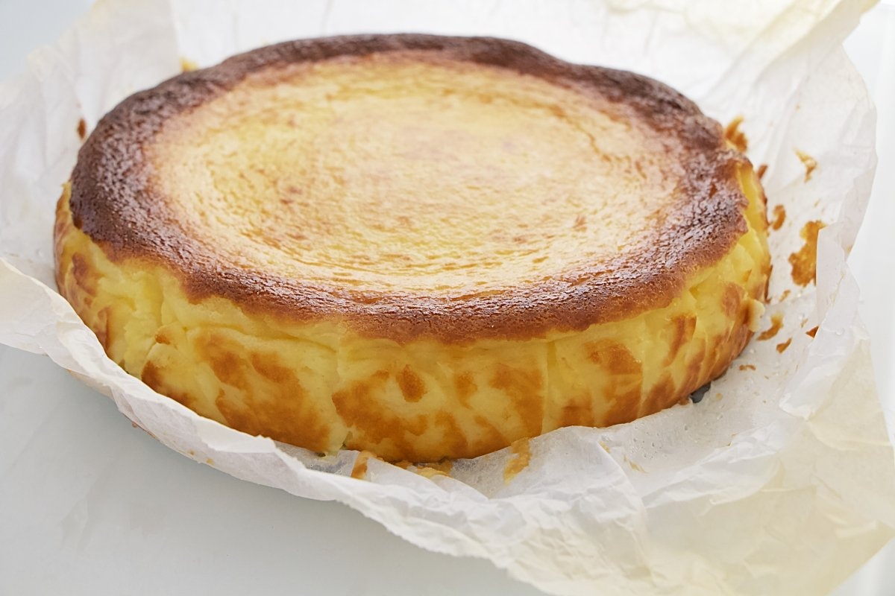

Tornar a la pàgina principal
Postre: Tarta de Queso
- 200g de galletas tipo María
- 100g de mantequilla derretida
- 600g de queso crema
- 200g de azúcar
- 200ml de nata para montar
- 3 huevos
- 1 cucharada de esencia de vainilla
- 200g de mermelada de frutos rojos (para decorar)
- Triturar 200g de galletas y mezclarlas con 100g de mantequilla derretida hasta formar una base compacta en un molde desmontable.

- En un bol, batir 600g de queso crema con 200g de azúcar hasta obtener una mezcla suave.

- Añadir 200ml de nata, 3 huevos y 1 cucharada de esencia de vainilla a la mezcla de queso, y batir hasta que esté homogénea.

- Verter la mezcla sobre la base de galletas y hornear a 160°C durante 50-60 minutos o hasta que el centro esté casi firme.
- Dejar enfriar y cubrir con 200g de mermelada de frutos rojos antes de servir.
